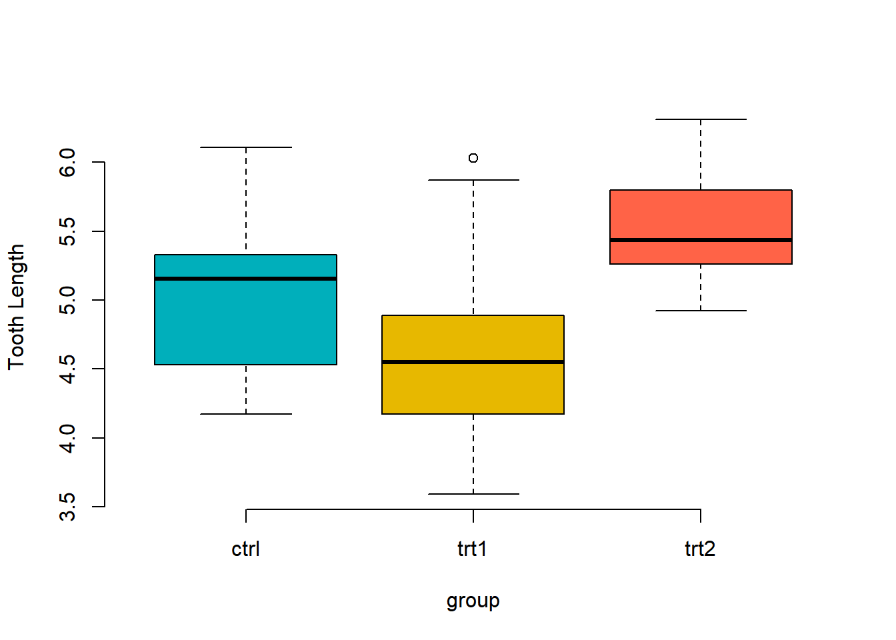

Chapter 7 일원분류 분산분석(One way ANOVA)
7.1 데이터 불러오기
data(PlantGrowth)
str(PlantGrowth)## 'data.frame': 30 obs. of 2 variables:
## $ weight: num 4.17 5.58 5.18 6.11 4.5 4.61 5.17 4.53 5.33 5.14 ...
## $ group : Factor w/ 3 levels "ctrl","trt1",..: 1 1 1 1 1 1 1 1 1 1 ...levels(PlantGrowth$group)## [1] "ctrl" "trt1" "trt2"R에 있는 기본 데이터셋인 PlantGrowth를 불러온다.
2개의 변수와 60개의 관측치가 있다.
group에는 3가지 요인(ctrl, trt1, trt2)이 있다.
7.2 일원분류 분산분석이란
분산분석이란 두 개의 집단의 평균의 비교할때, T-test를 사용했다.
분산분석은 3개 이상의 집단의 평균을 비교할때 사용한다.
여기서 말하는 집단은 독립변수의 요인 개수이다.
그리고 종속변수의 집단에 따라 분산분석이 나뉘어 진다.
일원분류 분산분석이란 종속변수(한 개 집단) ~ 독립변수(3개 이상 집단) 일때, 평균을 비교하는 기법이다.
boxplot(weight ~ group,
data=PlantGrowth,
frame = FALSE,
col = c("#00AFBB", "#E7B800","tomato"),
ylab="Tooth Length")
boxplot으로 나타내면 위와 같이 구성되어 있다.
7.3 전제조건
분산분석을 사용하기 위해서는 독립성, 등분산성, 독립성을 만족해야 한다.
7.3.1 정규성
str(PlantGrowth)## 'data.frame': 30 obs. of 2 variables:
## $ weight: num 4.17 5.58 5.18 6.11 4.5 4.61 5.17 4.53 5.33 5.14 ...
## $ group : Factor w/ 3 levels "ctrl","trt1",..: 1 1 1 1 1 1 1 1 1 1 ...with(data = PlantGrowth,shapiro.test(weight[group=="ctrl"]))##
## Shapiro-Wilk normality test
##
## data: weight[group == "ctrl"]
## W = 0.95668, p-value = 0.7475with(data = PlantGrowth,shapiro.test(weight[group=="trt1"]))##
## Shapiro-Wilk normality test
##
## data: weight[group == "trt1"]
## W = 0.93041, p-value = 0.4519with(data = PlantGrowth,shapiro.test(weight[group=="trt2"]))##
## Shapiro-Wilk normality test
##
## data: weight[group == "trt2"]
## W = 0.94101, p-value = 0.5643표본이 충분하기 때문에(30개 이상) clt와 대수의 법칙에 따라 정규성이 있다.
이전에 배운 정규성 검정을 연습해보았을때,
3개의 집단 모두 유의하기 때문에 정규성이 있다.
7.3.2 등분산성
bartlett.test(weight~group, data = PlantGrowth)##
## Bartlett test of homogeneity of variances
##
## data: weight by group
## Bartlett's K-squared = 2.8786, df = 2, p-value = 0.2371library(car)## Loading required package: carDataleveneTest(weight~group, data = PlantGrowth)## Levene's Test for Homogeneity of Variance (center = median)
## Df F value Pr(>F)
## group 2 1.1192 0.3412
## 27모수적 방법을 이용한다.
두 가지 모두 사용해 본다. 둘 다 p값이 유의하지 않기 때문에 등분산성이 있다.
7.3.3 독립성
ctrl <- with(data = PlantGrowth, weight[group=="ctrl"])
trt1 <- with(data = PlantGrowth, weight[group=="trt1"])
trt2 <- with(data = PlantGrowth, weight[group=="trt2"])
cov(ctrl, trt1)## [1] -0.2118022cov(ctrl, trt2)## [1] -0.1206244cov(trt1, trt2)## [1] -0.048873333개의 집단을 두 개씩 독립성 검정을 했을때, 공분산이 거의 0에 가깝다.
따라서, 서로 독립적이다.
7.4 One-way ANOVA test
귀무가설 : 모든 평균들은 다 같다.
대체가설 : 평균들이 모두 같지는 않다. (’평균들이 모두 다르다’가 아니다.)
plant.aov <- aov(weight~group, data = PlantGrowth)
summary(plant.aov)## Df Sum Sq Mean Sq F value Pr(>F)
## group 2 3.766 1.8832 4.846 0.0159 *
## Residuals 27 10.492 0.3886
## ---
## Signif. codes: 0 '***' 0.001 '**' 0.01 '*' 0.05 '.' 0.1 ' ' 1p값이 유의수준보다 작기 때문에 통계적으로 유의하다.
따라서, 3개의 집단의 평균들은 모두 같지는 않다.
7.5 다중비교
3개의 집단 평균들이 모두 같지 않다는 것은 알았다.
하지만 어떤 집단이 다르며, 어떠한 차이가 있는지 알 수 없었다.
그 내용을 다중비교를 통해 알 수 있다.(3가지 방법)
7.5.1 TukeyHSD
TukeyHSD(plant.aov)## Tukey multiple comparisons of means
## 95% family-wise confidence level
##
## Fit: aov(formula = weight ~ group, data = PlantGrowth)
##
## $group
## diff lwr upr p adj
## trt1-ctrl -0.371 -1.0622161 0.3202161 0.3908711
## trt2-ctrl 0.494 -0.1972161 1.1852161 0.1979960
## trt2-trt1 0.865 0.1737839 1.5562161 0.0120064TukeyHSD 함수는 두 개씩 짝을 지어 비교를 해준다.
p adj를 보면 trt2와 trt1이 유의수준(0.05)보다 작아 통계적으로 유의하다.
따라서, trt2와 trt1에서 평균의 차이가 있다고 해석한다.
diff: 두 집단의 평균 차이
lwr, upr: 95% 신뢰구간에서 하한값과 상한값
p adj: 조정된 p값
glht
++ glht() : 일반화된 선형 가설 검정에 쓰임
++ glht(model, lincft) + linfct : linear, 함수가 지정되어야 함
library(multcomp)## Loading required package: mvtnorm## Loading required package: survival## Loading required package: TH.data## Loading required package: MASS##
## Attaching package: 'TH.data'## The following object is masked from 'package:MASS':
##
## geysersummary(glht(plant.aov, linfct = mcp(group="Tukey")))##
## Simultaneous Tests for General Linear Hypotheses
##
## Multiple Comparisons of Means: Tukey Contrasts
##
##
## Fit: aov(formula = weight ~ group, data = PlantGrowth)
##
## Linear Hypotheses:
## Estimate Std. Error t value Pr(>|t|)
## trt1 - ctrl == 0 -0.3710 0.2788 -1.331 0.3909
## trt2 - ctrl == 0 0.4940 0.2788 1.772 0.1980
## trt2 - trt1 == 0 0.8650 0.2788 3.103 0.0121 *
## ---
## Signif. codes: 0 '***' 0.001 '**' 0.01 '*' 0.05 '.' 0.1 ' ' 1
## (Adjusted p values reported -- single-step method)TukeyHSD와 같은 결과이다.
mcp: group을 만드는 함수로 Tukey 함수를 쓰겠다.
pairwise.t.test## function (x, g, p.adjust.method = p.adjust.methods, pool.sd = !paired,
## paired = FALSE, alternative = c("two.sided", "less", "greater"),
## ...)
## {
## if (paired & pool.sd)
## stop("pooling of SD is incompatible with paired tests")
## DNAME <- paste(deparse1(substitute(x)), "and", deparse1(substitute(g)))
## g <- factor(g)
## p.adjust.method <- match.arg(p.adjust.method)
## alternative <- match.arg(alternative)
## if (pool.sd) {
## METHOD <- "t tests with pooled SD"
## xbar <- tapply(x, g, mean, na.rm = TRUE)
## s <- tapply(x, g, sd, na.rm = TRUE)
## n <- tapply(!is.na(x), g, sum)
## degf <- n - 1
## total.degf <- sum(degf)
## pooled.sd <- sqrt(sum(s^2 * degf)/total.degf)
## compare.levels <- function(i, j) {
## dif <- xbar[i] - xbar[j]
## se.dif <- pooled.sd * sqrt(1/n[i] + 1/n[j])
## t.val <- dif/se.dif
## if (alternative == "two.sided")
## 2 * pt(-abs(t.val), total.degf)
## else pt(t.val, total.degf, lower.tail = (alternative ==
## "less"))
## }
## }
## else {
## METHOD <- if (paired)
## "paired t tests"
## else "t tests with non-pooled SD"
## compare.levels <- function(i, j) {
## xi <- x[as.integer(g) == i]
## xj <- x[as.integer(g) == j]
## t.test(xi, xj, paired = paired, alternative = alternative,
## ...)$p.value
## }
## }
## PVAL <- pairwise.table(compare.levels, levels(g), p.adjust.method)
## ans <- list(method = METHOD, data.name = DNAME, p.value = PVAL,
## p.adjust.method = p.adjust.method)
## class(ans) <- "pairwise.htest"
## ans
## }
## <bytecode: 0x0000000020e04140>
## <environment: namespace:stats>pairwise.t.test(PlantGrowth$weight, PlantGrowth$group, p.adjust.method = "BH")##
## Pairwise comparisons using t tests with pooled SD
##
## data: PlantGrowth$weight and PlantGrowth$group
##
## ctrl trt1
## trt1 0.194 -
## trt2 0.132 0.013
##
## P value adjustment method: BH결과를 교차표로 만들어 준다.
7.6 비모수일때
만약 표본이 작거나 정규성을 따르지 않을때 kruskal.test 함수를 사용한다.
kruskal.test(weight ~ group, data = PlantGrowth)##
## Kruskal-Wallis rank sum test
##
## data: weight by group
## Kruskal-Wallis chi-squared = 7.9882, df = 2, p-value = 0.01842